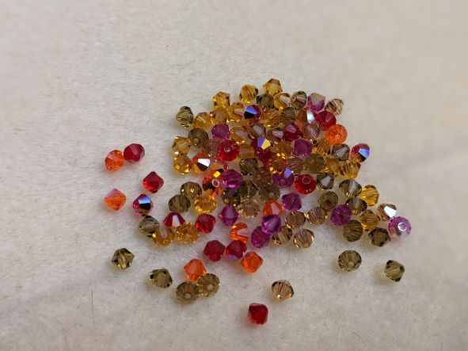

Meet the Maker
Meet the MakerHello! Here you will find some basic information about the creator behind The Bead Dragon: Lily Ellison.
Please excuse the mess as I work to get this site shinny. Feel free to have a look around while I learn how to make this site run more smoothly and show what I want, how I want to show it. Updates will be applied as I learn new tricks of the web development/designing trade. I'm excited to show off what I am learning and what I am creating, with both beads and computers. Enjoy!
Who is The Bead Dragon?
Lily Ellison, the person behind The Bead Dragon, is a self-proclaimed nerd who has been beading for a few years now. Apart from beading, she also enjoys the company of her family, including 4 rescue cats, and a small group of friends. Other interests include gaming, coding, swimming, baking, watching TV, reading, and listening to podcasts. Favorite book/tv genres include fantasy, some science fiction, light-hearted horror, and comedy. Some podcasts she enjoys are The Adventure Zone, Dungeons and Daddies, Tales from the Stinky Dragon, Oh No Ross and Carrie, Sawbones, Shmanners, Neighborly, Black Box Down, Cult Podcast, RedWeb, and Welcome to Night Vale among others.
Why Beads?
The first item of significance that I used beads to create was my wedding veil in 2009/2010. Official veils are expensive, and I was more interested in having a great location and delicious food than designer accessories that would be worn once. I did a simple woven fringe in blue beads from the local crafts store. It was effective, but it didn't spark me to really create with beads (maybe because I was busy planning a wedding). I put the beads in with my other craft supplies and frankly forgot about them for several years until I struggled to find a necklace that I wanted to complete an outfit for my new job as a storyteller in 2017. After searching for what I had in mind and not finding it, I decided to make it. I had a clear vision of what I wanted, but I was surprised at how much joy I took from making it. Executing a vision isn't always easy, but this was fun!
At that point, I decided to look into beading other things. After a few internet searches and joining a Facebook group or two, I was hooked. Beads are so diverse and verisatile. They can be made out of almost anything, be almost any size, shape, color, finish... So many possibilities. So many pretty, interesting things. So much sparkle. I want them all. I want to make everything with them. Why wouldn't I?
Why Dragons?
Why NOT dragons? Dragons are bigger than life. They are mysterious and mythical. They are creative, imaginative, and wonderous. They span cultures and time. They are magical. Who wouldn't want to be associated with those attributes?
Plus, they gather shinny, pretty, precious things and protect them. My bead collection is not unlike a little hoard. I mean, so do corvids, and honestly, The Bead Magpie, Crow, or Raven isn't bad.
